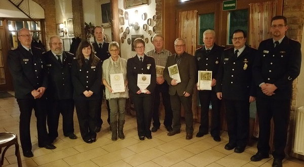
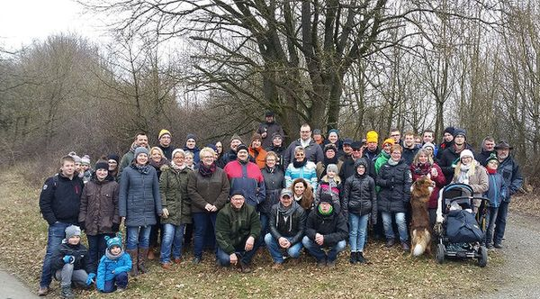
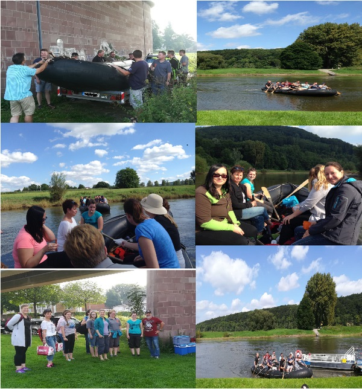
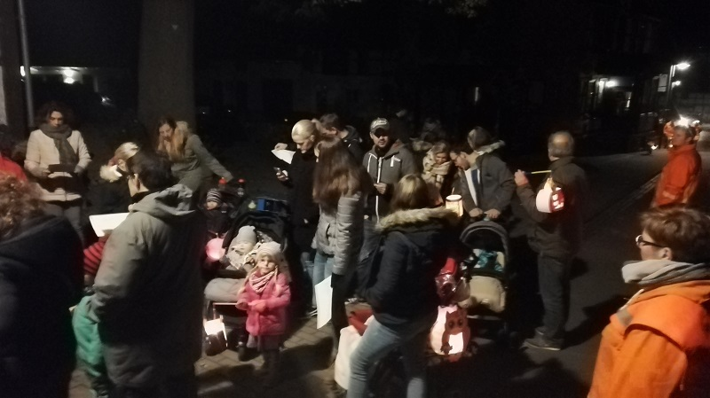
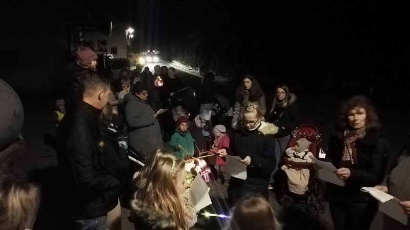
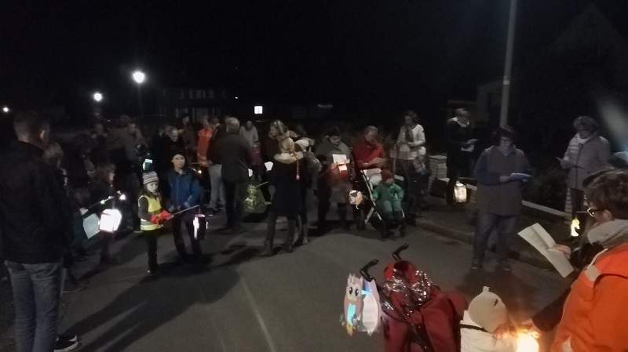
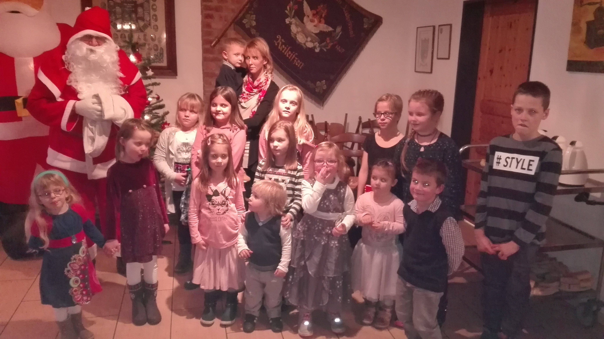

Archiv – 2017
Jahreshauptversammlung 2017: Ehrungen für jahrzehntelange Treue
Unsere Jahreshauptversammlung im Jahr 2017 war geprägt von Stolz und Anerkennung für treue Kameradschaft.
Ein wichtiger Schritt für unsere Einsatzabteilung war die Beförderung von Jasmin Bergmeier
und Domenik Schünemann, die ab sofort den Dienstgrad Hauptfeuerwehrfrau bzw. Hauptfeuerwehrmann tragen.
Besonders beeindruckend waren die Auszeichnungen für den aktiven Dienst: Hans-Erich Knischewski wurde
für beachtliche 40 Jahre Einsatzbereitschaft geehrt, während Tina Bergmeier für 25 Jahre aktiven
Dienst ausgezeichnet wurde.
Auch die langjährige Verbundenheit unserer Mitglieder zur Wehr wurde feierlich gewürdigt.
Maria Vorwohlt wurde für 25 Jahre Mitgliedschaft geehrt. Ein ganz besonderer Applaus galt
Klaus Ohm, Wilhelm Beck und Wilfried Schlieker, die für ihre stolze **50-jährige Treue** zur Feuerwehr Reileifzen ausgezeichnet wurden. Ein herzliches Dankeschön für dieses großartige Engagement!

Winter-Highlight: Unsere Grünkohlwanderung 2017
Kaiserwetter und beste Laune: Rund 50 Wanderlustige schnürten am 12. Februar die Stiefel, um die knapp 10 Kilometer
lange Strecke in Angriff zu nehmen. Die Route führte uns von Reileifzen über das geschichtsträchtige Dreiländereck
bis nach Dölme. Zurück in der Gänsetränke stieß auch die „Nicht-Wander-Fraktion“ dazu, um gemeinsam bei
deftigem Grünkohl und goldbraunen Schnitzeln den Tag in geselliger Runde zu feiern.

Leinen los! Kameradschaft auf der Weser
Am 27. August hieß es für 21 Kameraden und Partner: Ab aufs Wasser! Bei strahlendem Sonnenschein startete
unsere Bootstour in Stahle. Nach einem gemütlichen Zwischenstopp in Heinsen genossen wir die entspannte
Fahrt flussabwärts. Den perfekten Abschluss fand der Tag bei einem gemeinsamen Grillabend direkt
am Gerätehaus in Reileifzen – ein Riesenspaß für alle Beteiligten.

Lichtermeer in Reileifzen: Der Laternenumzug 2017
Am 9. November verwandelte sich unser Ort wieder in ein stimmungsvolles Lichtermeer. Gemeinsam mit der
Feuerwehr zogen zahlreiche Kinder und Erwachsene durch die Straßen. Begleitet von fröhlichem Gesang
und dem warmen Schein der bunten Laternen genossen wir die herbstliche Abendstimmung.
Es ist immer wieder ein schöner Moment der Gemeinschaft, wenn Groß und Klein zusammenkommen,
um diese leuchtende Tradition zu pflegen. Hier sind einige Impressionen des Abends:



Besinnlicher Jahresausklang: Die Adventsfeier
Zum Abschluss eines ereignisreichen Jahres kamen wir im Dezember zur traditionellen Adventsfeier zusammen.
In gemütlicher Atmosphäre ließen wir die vergangenen Monate Revue passieren und stimmten uns gemeinsam
auf die Weihnachtszeit ein. Ein schöner Moment, um die Kameradschaft abseits des Einsatzgeschehens zu pflegen.
